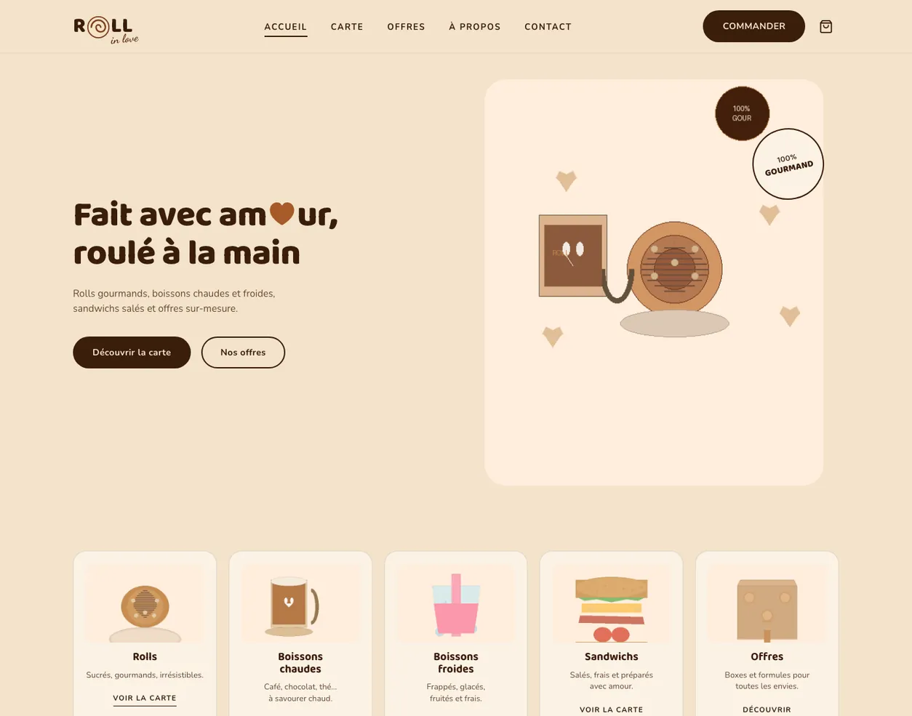

COFFEE SHOP · SAINT-JEAN-DE-MONTS
Roll in Love

Le contexte — Roll in Love, coffee shop spécialisé en cinnamon rolls à Saint-Jean-de-Monts, avait déjà une direction artistique complète : couleurs chaleureuses, typographie, logo, univers gourmand. Il manquait le site.
Notre approche — Partir de l'existant, sans le trahir. On a traduit cette identité en expérience web : chaque section respire la même vibe que la boutique, du ton des textes aux animations.
Le résultat — Un site vitrine qui prolonge l'univers de la marque en ligne — carte, offres, commande — comme si vous poussiez la porte de la boutique.
- Site vitrine complet : carte, offres, à propos, contact
- DA existante respectée à la lettre
- Illustrations et micro-animations dans l'esprit de la marque
- Responsive et rapide sur mobile